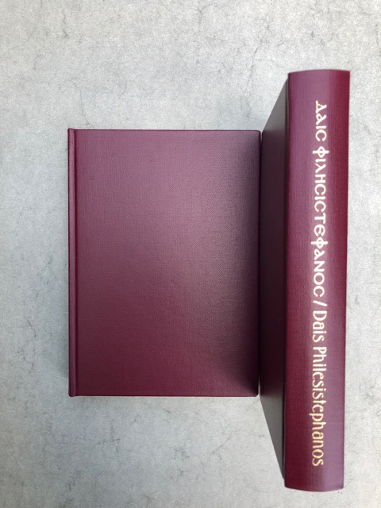

Dais Philesistephanos: Studies in Honour of Professor Staffan Fogelmark Presented on the Occasion of his 65th Birthday 12 April 2004
Ed. by Pär Sandin & Marianne Wifstrand Schiebe. Uppsala: Dahlia books, 2004

CONTENTS
Editors’ Preface, p. 9
- Sten Hidal: When and Why is a Sacrifice Rejected? A Comparison between Homer and the Old Testament, p. 11
- Douglas Gerber: Archilochus fr. 218 W., p. 19
- Gordon Howie: Apollo’s Dealings with Chiron ans Croesus: Ambiguity and Hymnic Predication in Hesiod’s Theogony, Pindar’s 9th Pythian, and Herodotus 1, p. 21
- Kristian Göransson: Pindar, Arcesilas IV, and Euesperides, p. 70
- Pär Sandin: ἀλλὰ . . . γὰρ . . . τῷ: Another Note on Pindar, Nemean 7.30-35, p. 76
- István Hajdú: Der Redner und sein Publikum in den Staatsreden des Demosthenes und Ciceros, p. 81
- Bo Frid: Romans 1:18-32, p. 97
- Gerald M. Browne: Ad Iustini Martyris qui fertur De resurrectione libellum, p. 125
- Henrik Gerding: Horatius, Ode 2.10 and the Crassus Affair, p. 128
- Erik Persson: Joachim of Fiore and Amalric of Bène and the Origins of “the Immanentization of the Eschaton”, p. 149
- Paul Needham: The Mainz Catholicon (1460) and the Great Year of the Sun, p. 231
- Marianne Rozsondai: Remarks on the Lucretius-codex of the Bibliotheca Corviniana (Vienna, ÖNB Cod. 170), p. 278
- Marianne Wifstrand Schiebe: Ein Streifzug durch die Welt der frühen Quintiliandrucke, p. 292
- Anders Ollfors: The Anchor and the Dolphin and some Other Printer’s Devices, p. 322
- Arne Jönsson: The Battle of the Muses: Language Policies and Literary Polemics in 17th-Century Sweden, p. 332
- Ann-Mari Jönsson: Carl Linnaeus and his Early International Correspondence: The Making of a Botanist, p. 352
- Rolf E. DuRietz: Bibliographical Notes on the Greek New Testament of Strängnäs 1758, and on Johan Tranér’s Editions of Sappho and Eight other Greek Poetesses, Uppsala 1821-7, p. 383
- Marianne Thormählen: Anne Brontë’s Sacred Harmony: A Discovery in the Brontë Parsonage Museum, p. 401
- N. Keith Rutter: Barclay Vincent Head, p. 418
- William M. Calder III: Eduard Fraenkel on Ernst Robert Curtius and Gilbert Highet: An Unpublished Testimonium, p. 435
The Printed Writings of Staffan Fogelmark: A Checklist, p. 443
Where to buy
Copies can still be ordered by contacting: staffan@fogelmark.org at the price of €40 plus postage.